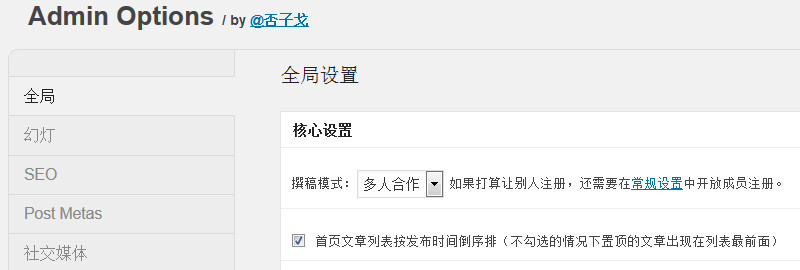

GD提供了3种写作模式：单人独撰、多人合撰、众人投稿。只有第三种方式会开通登录、注册、投稿功能。3种方式的意思我都不用解释了，下面来分析一下它们的不同。
| 单人独撰 | 多人合撰 | 众人投稿 | |
| 是否需要开启注册功能 | |||
| 登录 | |||
| 注册 | |||
| 投稿 | |||
| 用户中心 | |||
| 作者文章列表页URL | |||
| 文章标题下方是否显示作者 | |||
| 是否在文章末显示作者信息 | |||
| 投稿者角色有无上传图片权限 |
从上表可以看出，众人投稿的模式有非常大的可运作性。单人和多人的唯一区别就是，多人的会在文章标题的文章信息中表明是谁写的，在文章内容页面的文章内容下方会显示作者的详细介绍。
在众人模式下，还会自动打开投稿者的媒体上传权限，用户等级分为：订阅者、投稿者、作者、编辑、管理员。
除了订阅者之外，其他角色都可以上传图片，我的建议是，想要成为你网站的投稿者或作者，都需要特殊的条件，比如交钱。订阅者可以投稿，但是只能在前台投稿，每天只能提交一篇，投稿者则可以进入后台投稿，后台投稿是没有限制的，只不过投稿的稿件不会直接出现在前台，而作者的文章则会直接显示在前台，编辑还可以删除这些文章，管理员还能删除用户。
如果你不打算让别人投稿，那么在下图对应的地方，设置为对应的模式。同时，还要在常规设置中关闭注册。

如果你打算让别人投稿，在上图中选择“众人投稿”，然后在常规设置中打开注册。